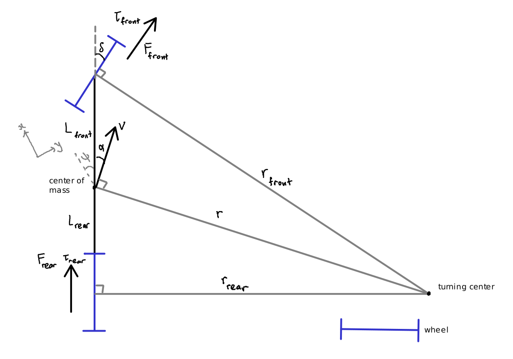

Model Overview
Our dynamics model takes in state and control input and outputs the next state after a given timestep. We make a Markov assumption that the future state depends only on the current state and control input.
Notation
\(\vec{x}\): state vector
\(\vec{u}\): control action vector
\(\Delta t\): model timestep
\(\vec{x_{next}}\): state vector after timestep
\(\vec{f}\): dynamics function
\(x\): x position in inertial frame
\(y\): y position in inertial frame
\(\psi\): yaw angle from x-axis
\(v\): scalar speed of the car
\(\delta\): steering angle
\(\tau_{motor}\): total motor torque
\(m\): mass of the car
\(R\): wheel radius
\(\hat{\delta}\): kinematic steering angle (explained later)
\(\kappa\): understeer gradient
\(\alpha\): slip angle (angle between velocity vector and car body)
\(\omega\): angular velocity of the car
\(r\): turning radius
\(r_{rear}\): distance from rear wheel to center of turning circle
\(r_{front}\): distance from front wheel to center of turning circle
\(L_{front}\): distance between front wheel and center of mass
\(L_{rear}\): distance between rear wheel and center of mass
\(\tau_{front}\): torque on front wheel
\(\tau_{rear}\): torque on rear wheel
\(F_{front}\): force on front wheel
\(F_{rear}\): force on rear wheel
\(F_{drag}\): drag force (rolling and air resistance)
\(F_{net}\): net force on car
Specification
Note
The \(x\) axis points forward and the \(y\) axis points to the right. The car starts facing the positive x direction. A positive yaw or steering angle means the car is turning clockwise.
We use a modified bicycle model that introduces a couple of assumptions:
There is no lateral slip on the tires.
Between model timesteps, the car moves in approximately uniform circular motion.
There is no longitudinal slip on the tires.
The angular inertia of the wheels is negligible compared to the inertia of the car and the torque being applied.
This assumption holds true unless the car is cornering very fast.
We will refer to the assumptions as [1], [2], [3] and [4].
During cornering, the car is modeled as such:
Note
The car is not necessarily aligned to the x and y axes.
From [1], both tires move parallel to themselves with no sideway slip. Thus, given solely by the steering angle, the turning radius and center should be calculable.
However, as speed increases, the car understeers more. The steering wheel needs to be turned more to achieve the same turning radius. This is a consequence of our slipless assumption.
We characterize this with a tunable parameter called the understeer gradient \(\kappa\), and define the kinematic steering angle \(\hat{\delta} = \frac{\delta}{1 + \kappa v}\), which is used to determine turning radius and center.
Note
The understeer gradient can be empirically measured by doing skidpad at various speeds and comparing the steering angle to the turning radius.
Calculate the slip angle \(\alpha\), which is the angle between the car’s velocity vector and the car’s body.
We calculate the higher order terms of \(\vec{x_{next}}\) first - speed.
From [2], the car’s velocity is perpendicular to the turning axis. Thus, to find \(\delta v\), we need to find the net force on the car in the direction of \(\vec{v}\).
Actual steering angle is used here since that determines the direction of the forces.
Over the model timestep, the average speed \(\bar{v} = \frac{v + v_{next}}{2}\). Use this to recalculate \(\hat{\delta}, r, \alpha\).
Angular speed \(\omega = \frac{\bar{v}}{r}\), and because of [2], \(\frac{d\psi}{dt} = \omega\).
Thus, the new yaw angle \(\psi_{next} = \psi + \omega \Delta t\).
Finally, calculate the new position of the car. Because of [2], instead of extrapolating \(\bar{v}\) into the future, we can find its position by moving it along the circular path.
We use \(r_{rear}\) instead of \(r\) because the car body is perpendicular not to the turning axis, but the line connecting the rear wheel to the center of the turning circle.
The model is now complete.